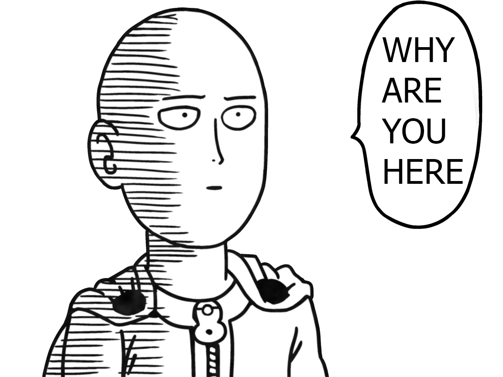

{{vm.detailsPage.list.title}}
{{vm.detailsPage.list.manga_name}}
Status: {{vm.detailsPage.list.status}}
Number of Chapters: {{vm.detailsPage.list.chapters}}
Number of Chapters: {{vm.detailsPage.list.latest_chapter}}
Last Chapter Read: {{vm.detailsPage.list.last_chapter_read}}